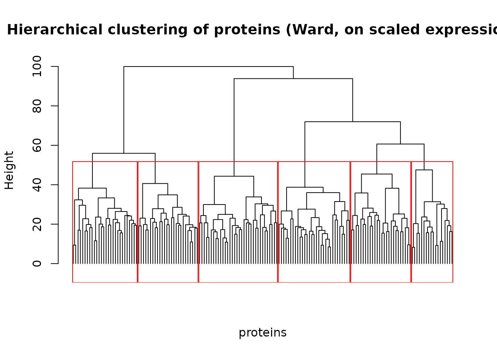
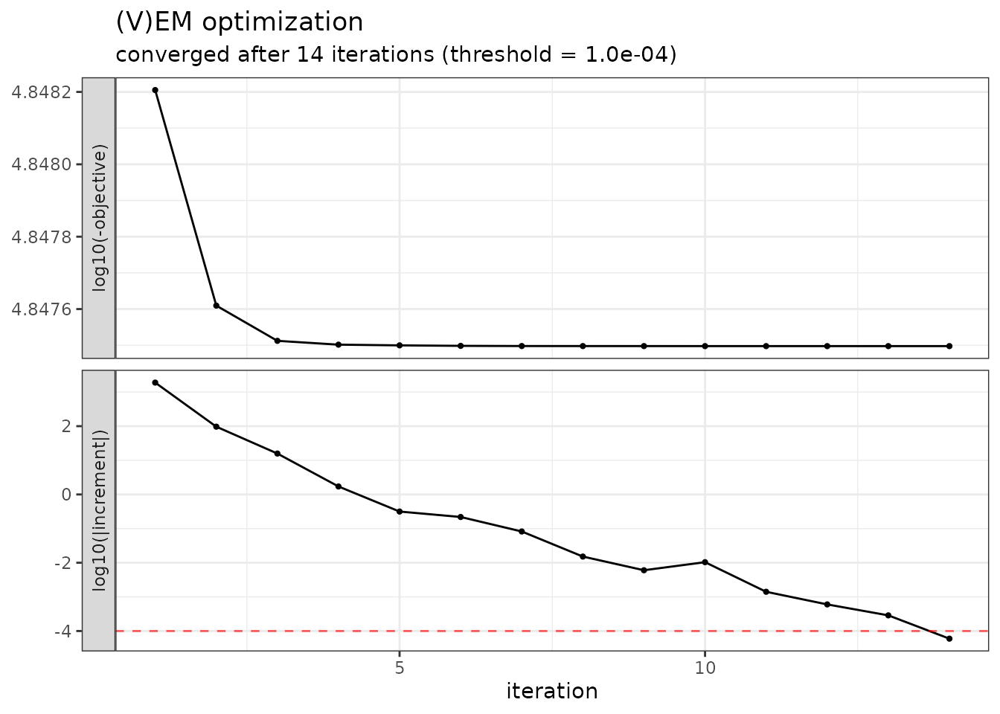
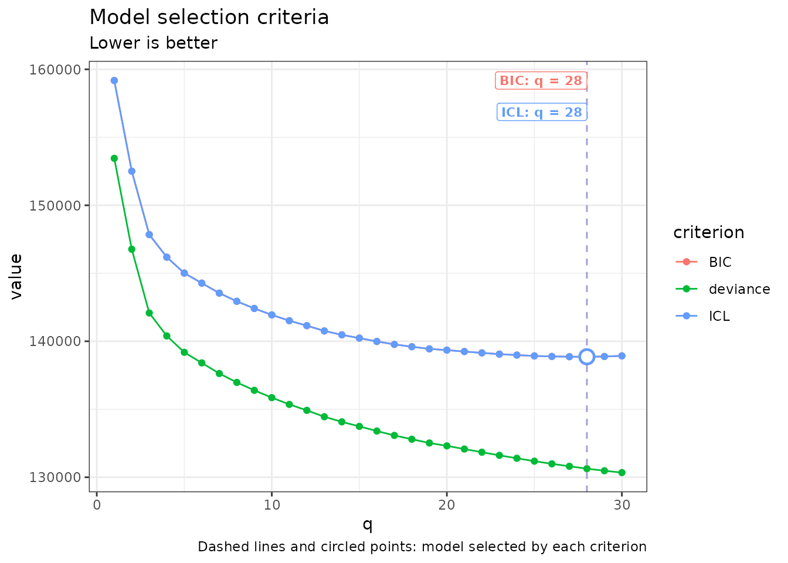
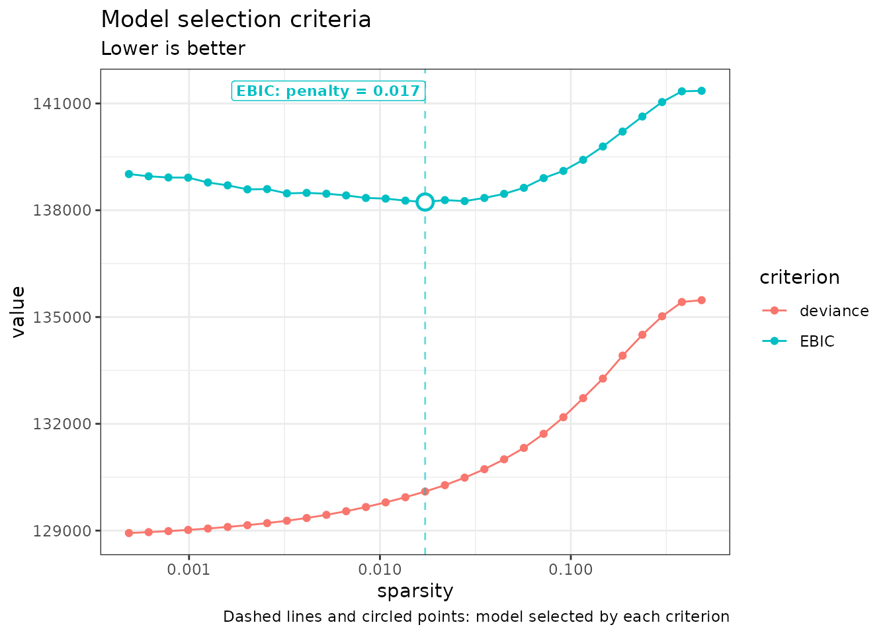
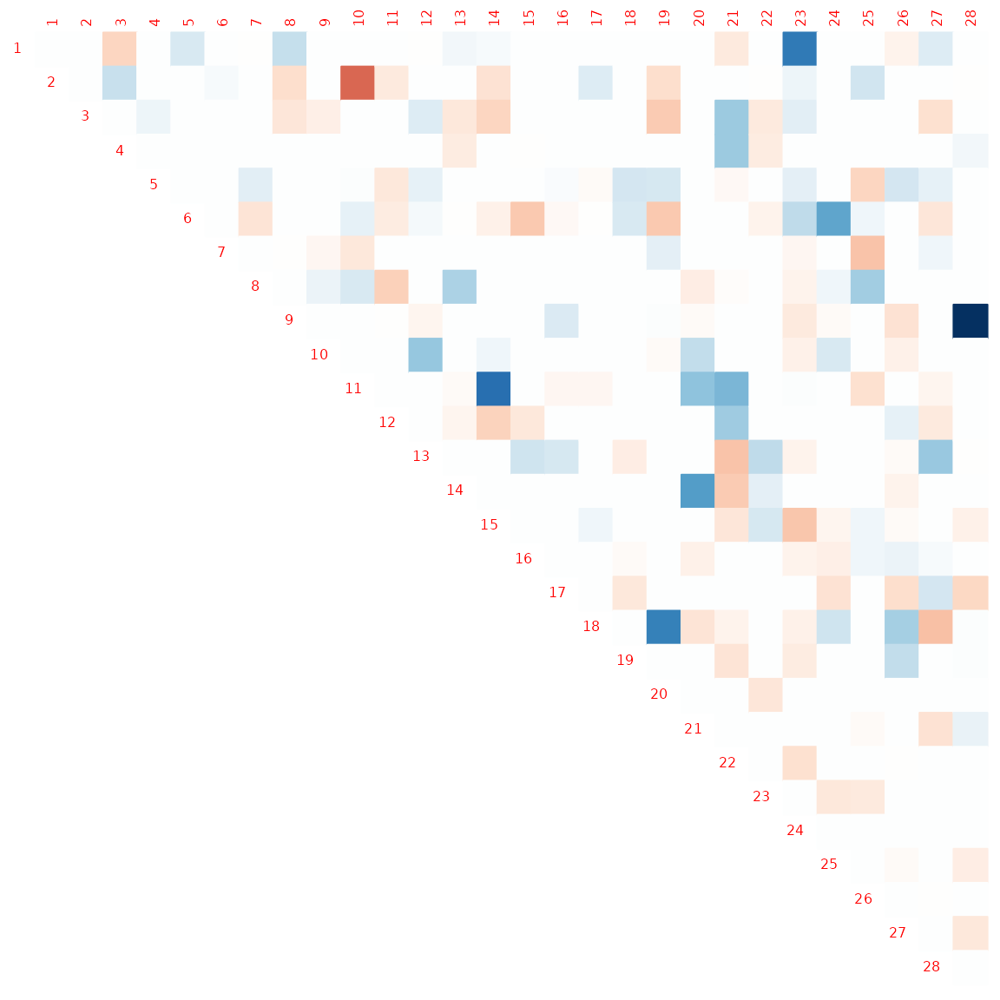

Normal-Block models: clustering variables by their covariance — a worked example with breast cancer proteomics data
Julien Chiquet & Jeanne Tous
2026-11-23
Source:vignettes/breast-cancer-proteomics.Rmd
breast-cancer-proteomics.RmdPreliminaries
This vignette walks through a real-data analysis with the
Normal-Block model, using the brca_rppa dataset shipped
with the package (see ?brca_rppa): reverse-phase protein
array measurements of 163 proteins across 346 breast cancer tumor
samples from The Cancer Genome Atlas, together with each sample’s PAM50
molecular subtype. See the normal-block vignette
(vignette("normal-block")) for a general introduction to
the package on simulated data; this one focuses on a single real
dataset, illustrated first with a known clustering of the proteins, then
with the clustering left for the model to infer, and finally with the
post-hoc refine() step.1
Mathematical background
The Normal-Block model is a Gaussian latent-variable model for a table of observations (here, tumor samples and proteins), possibly after correcting for covariates (here, the PAM50 subtype). Conditionally on latent factors , one per cluster of variables:
assigns every protein to exactly one of the
clusters; it is either given (known clustering, e.g. from an independent
source) or itself unknown and inferred jointly with everything else, in
which case the model carries a variational posterior distribution over
rather than a single point estimate.
is the residual (idiosyncratic) covariance of each protein, taken
diagonal here. The key structural assumption is that two proteins in the
same cluster share the same latent factor: their covariance is
driven entirely by
,
a single value for the whole cluster, rather than by a separate pairwise
term for every pair of proteins.
,
the latent factors’ precision matrix, is what
plot_network() displays: the inferred association network
between clusters, not between individual proteins. In its plain
(non-regularized) form, that network is dense and not very informative
to look at directly – we only visualize it at the end of this vignette,
after regularizing it with a graphical lasso penalty. See Tous and Chiquet (2026) for the model itself and
for the full estimation details.
The data
data(brca_rppa)
dim(brca_rppa$expr)
#> [1] 346 163
table(brca_rppa$covariates$PAM50_SUBTYPE)
#>
#> Basal-like HER2-enriched Luminal A Luminal B Normal-like
#> 66 43 150 82 5expr is the
matrix of (samples x proteins) expression levels; the PAM50 subtype, a
5-level clinical covariate, is used as
throughout, so that the model accounts for each subtype’s own mean
expression level before looking for structure in what’s left.
Y <- as.matrix(brca_rppa$expr)
X_subtype <- model.matrix(~ 0 + PAM50_SUBTYPE, data = brca_rppa$covariates)
data_subtype <- NormalBlockData$new(Y, X_subtype)A known clustering of the proteins
Before letting the Normal-Block model infer its own grouping of the
proteins, we build a simple, fully data-driven baseline: a hierarchical
(Ward) clustering of the proteins from their expression profiles alone,
with no reference to the Normal-Block model at all. By default
normalblockr scales the data for variance-block models
(each protein divided by its own standard deviation), so this a priori
clustering is computed on the same (column-)scaled matrix for
consistency. Six clusters is an arbitrary but visually natural cut of
the dendrogram.
hc_expr <- brca_rppa$expr |> scale() |> t() |> dist() |> hclust("ward.D2")
plot(hc_expr, labels = FALSE, hang = -1,
main = "Hierarchical clustering of proteins (Ward, on scaled expression)",
xlab = "proteins", sub = "")
rect.hclust(hc_expr, k = 6, border = "red")
group <- model.matrix(~ 0 + factor(cutree(hc_expr, 6)))This fixed grouping is then handed to normal_block() as
a known clustering: the model only estimates the association network
between the 6 blocks, not the grouping itself.
NB_prot_group <- normal_block(data_subtype, blocks = group)
#> Fitting a diagonal normal-block-var model with fixed clusters
#>
#> DONE
plot(NB_prot_group)
print(NB_prot_group)
#> A diagonal normal-block-var model with fixed clusters.
#> ===========================================================================
#> nb_param q n_edges sparsity loglik deviance BIC ICL EBIC niter
#> 999 6 15 0 -70387.84 140775.7 146616.3 146616.3 146670 14
#> ===========================================================================
#> * Useful fields
#> $model_par, $posterior_par / $var_par, $clustering
#> $loglik, $BIC, $ICL, $objective, $nb_param, $criteria
#> * Useful S3 methods
#> print(), summary(), plot(), coef(), sigma(), fitted(), predict()A known clustering should be checked against one property of the
model: within a block, two variables are noisy copies of the same latent
signal, so their correlation is necessarily positive. A block gathering
anticorrelated proteins is misspecified, and would be better described
as two blocks linked by a negative association.
within_block_correlations() compares, block by block, the
empirical correlations of the residuals with the ones the fitted model
implies:
NB_prot_group$within_block_correlations()
#> block size mean_cor min_cor prop_negative model_cor
#> 1 1 18 0.23721985 -0.2016547 0.14379085 0.2679674
#> 2 2 34 0.27230730 -0.1436343 0.05882353 0.3422232
#> 3 3 31 0.33595194 -0.2609743 0.06666667 0.4367069
#> 4 4 26 0.10972075 -0.2547531 0.22769231 0.1277935
#> 5 5 28 0.24108436 -0.2079646 0.03968254 0.2729286
#> 6 6 26 0.08398501 -0.3428242 0.34461538 0.1089980Letting the model infer its own clustering
Fitting a collection over a range of cluster counts
When the clustering is left unknown, normal_block()
accepts a range of candidate cluster counts and returns a collection of
models, one per
,
fitted independently, each cold-started from a clustering heuristic on
the residuals (kmeans by default), then polished by
refine() (see below). We turn refine() off
here, to show what it changes in the next section.2
NB_prot_subtype <- normal_block(data_subtype, blocks = 1:30, control = NB_control(refine = FALSE))
#> Fitting a collection of diagonal normal-block-var models over q
#>
#> DONERefining the clustering
Every model in the collection above was fitted independently,
cold-started from its own clustering heuristic: on real data, it can
settle into a milder local optimum than an incremental, neighbor-seeded
search would. refine() tries, for every
beyond the collection’s extremes, a short split-and-reoptimize trial
seeded from its already-fitted
neighbor and/or a short merge-and-reoptimize trial seeded from its
neighbor, keeping a candidate only if it strictly improves the deviance.
It runs unconditionally over the whole range and discards whatever
doesn’t help, so it can only improve (or leave unchanged) each model it
touches. normal_block() runs it by default
(NB_control(refine = TRUE)); since we turned it off above,
we call it explicitly:
NB_prot_subtype$refine()
#> refine: q = 2 -- deviance 146766.1 -> 146766.1 (improved via split )
#> refine: q = 3 -- deviance 142087.1 -> 142087.1 (improved via split )
#> refine: q = 4 -- no improvement found ( split )
#> refine: q = 5 -- no improvement found ( split )
#> refine: q = 6 -- deviance 138644.3 -> 138409.3 (improved via split )
#> refine: q = 7 -- deviance 138047.7 -> 137629 (improved via split )
#> refine: q = 8 -- deviance 137409.7 -> 137107.1 (improved via split )
#> refine: q = 9 -- deviance 136731 -> 136672.8 (improved via split )
#> refine: q = 10 -- no improvement found ( split )
#> refine: q = 11 -- deviance 135864.5 -> 135493.1 (improved via split )
#> refine: q = 12 -- deviance 135833.7 -> 135157.5 (improved via split )
#> refine: q = 13 -- deviance 135087 -> 134873.9 (improved via split )
#> refine: q = 14 -- deviance 135019.4 -> 134669.1 (improved via split )
#> refine: q = 15 -- deviance 134286.7 -> 134048.9 (improved via split )
#> refine: q = 16 -- deviance 133884.8 -> 133765.4 (improved via split )
#> refine: q = 17 -- deviance 133394.8 -> 133255.6 (improved via split )
#> refine: q = 18 -- deviance 133391.2 -> 133054.4 (improved via split )
#> refine: q = 19 -- no improvement found ( split )
#> refine: q = 20 -- deviance 132974.8 -> 132465.9 (improved via split )
#> refine: q = 21 -- deviance 133028.7 -> 132257.8 (improved via split )
#> refine: q = 22 -- deviance 132062 -> 132020 (improved via split )
#> refine: q = 23 -- deviance 132335.8 -> 131777.5 (improved via split )
#> refine: q = 24 -- deviance 132104.2 -> 131602.6 (improved via split )
#> refine: q = 25 -- deviance 131391.5 -> 131380.4 (improved via split )
#> refine: q = 26 -- deviance 131808.2 -> 131231.8 (improved via split )
#> refine: q = 27 -- deviance 131309.7 -> 130914 (improved via split )
#> refine: q = 28 -- deviance 131045.1 -> 130743 (improved via split )
#> refine: q = 29 -- deviance 131177.5 -> 130542.6 (improved via split )
#> refine: q = 30 -- deviance 130980.4 -> 130341.2 (improved via split )
#> refine: q = 29 -- deviance 130542.6 -> 130477.2 (improved via merge )
#> refine: q = 28 -- deviance 130743 -> 130631 (improved via merge )
#> refine: q = 27 -- deviance 130914 -> 130805.7 (improved via merge )
#> refine: q = 26 -- deviance 131231.8 -> 130987.5 (improved via merge )
#> refine: q = 25 -- deviance 131380.4 -> 131182.1 (improved via merge )
#> refine: q = 24 -- deviance 131602.6 -> 131395.6 (improved via merge )
#> refine: q = 23 -- deviance 131777.5 -> 131611.1 (improved via merge )
#> refine: q = 22 -- deviance 132020 -> 131840.7 (improved via merge )
#> refine: q = 21 -- deviance 132257.8 -> 132075 (improved via merge )
#> refine: q = 20 -- deviance 132465.9 -> 132307.1 (improved via merge )
#> refine: q = 19 -- deviance 132692.6 -> 132519.5 (improved via merge )
#> refine: q = 18 -- deviance 133054.4 -> 132795.2 (improved via merge )
#> refine: q = 17 -- deviance 133255.6 -> 133075.5 (improved via merge )
#> refine: q = 16 -- deviance 133765.4 -> 133397.1 (improved via merge )
#> refine: q = 15 -- deviance 134048.9 -> 133741.5 (improved via merge )
#> refine: q = 14 -- deviance 134669.1 -> 134073.5 (improved via merge )
#> refine: q = 13 -- deviance 134873.9 -> 134449.5 (improved via merge )
#> refine: q = 12 -- deviance 135157.5 -> 134918.9 (improved via merge )
#> refine: q = 11 -- deviance 135493.1 -> 135357.8 (improved via merge )
#> refine: q = 10 -- deviance 136250.3 -> 135853.7 (improved via merge )
#> refine: q = 9 -- deviance 136672.8 -> 136391.9 (improved via merge )
#> refine: q = 8 -- deviance 137107.1 -> 136974.8 (improved via merge )
#> refine: q = 7 -- no improvement found ( merge )
#> refine: q = 6 -- no improvement found ( merge )
#> refine: q = 5 -- no improvement found ( merge )
#> refine: q = 4 -- no improvement found ( merge )
#> refine: q = 3 -- deviance 142087.1 -> 142080.9 (improved via merge )
#> refine: q = 2 -- no improvement found ( merge )
#> refine: q = 1 -- no improvement found ( merge )
selected_NB_refined <- NB_prot_subtype$get_best_model("ICL")
paste0("After refine(), ICL selects ", selected_NB_refined$q, " clusters.")
#> [1] "After refine(), ICL selects 28 clusters."On this dataset, refine() moves the ICL-selected number
of clusters, a reminder that the collection-wide local search is not
just cosmetic: a clustering that looked locally optimal in isolation can
still be improved once its neighbors in
are available as alternative starting points.
Sparsifying the network of the selected clustering
The association network
of the ICL-selected model above is dense (no penalty was applied), which
makes it hard to read directly. Treating that clustering as fixed, we
refit the model with the graphical-lasso penalty on
explored over a path of values (sparsity = TRUE). Along
such a path, some fits may stop at the iteration cap with a warning;
they are not shown here.
group_selected <- model.matrix(~ 0 + factor(selected_NB_refined$clustering))
NB_prot_sparse <- normal_block(data_subtype, blocks = group_selected, sparsity = TRUE,
control = NB_control(min_ratio = 0.001, verbose = FALSE))
The criteria favour weak penalties, hence dense networks: the EBIC keeps many of the possible edges.
sparse_ebic <- NB_prot_sparse$get_best_model("EBIC")
paste0("EBIC keeps ", sparse_ebic$n_edges, " edges out of ", choose(sparse_ebic$q, 2), ".")
#> [1] "EBIC keeps 180 edges out of 378."Stability selection (StARS) is better suited to reading the network. It refits the path on subsamples of the observations, the clustering being held fixed, and keeps the smallest penalty whose network is stable enough:
set.seed(1)
sparse_stars <- NB_prot_sparse$get_best_model("StARS")
paste0("StARS keeps ", sparse_stars$n_edges, " edges.")
#> [1] "StARS keeps 51 edges."
sparse_stars$plot_network(node.labels = seq_len(sparse_stars$q), remove.isolated = TRUE,
layout = igraph::layout_with_fr)
The width of an edge is proportional to the absolute partial correlation between the two clusters, positive in red and negative in turquoise, and the size of a node to that of its cluster; isolated clusters are not drawn.